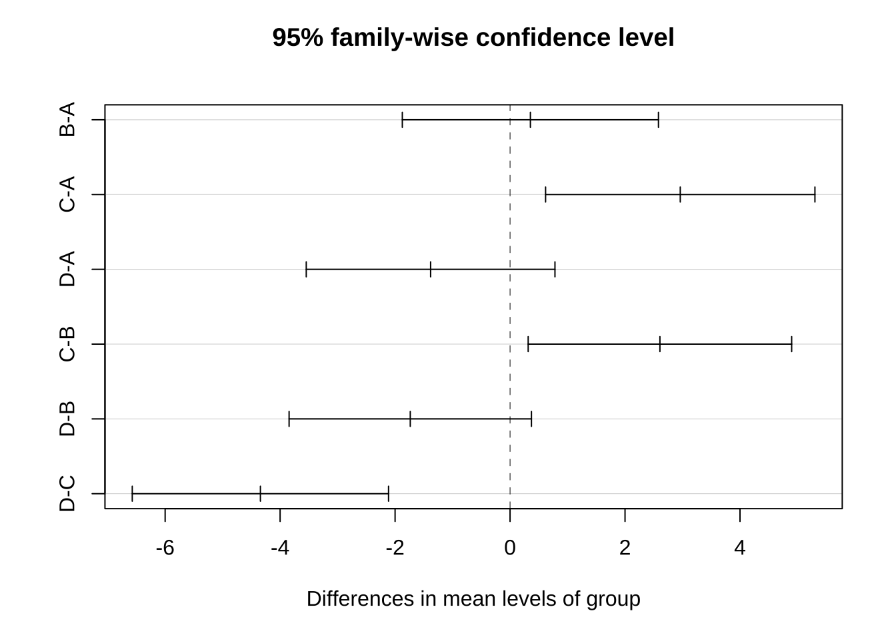
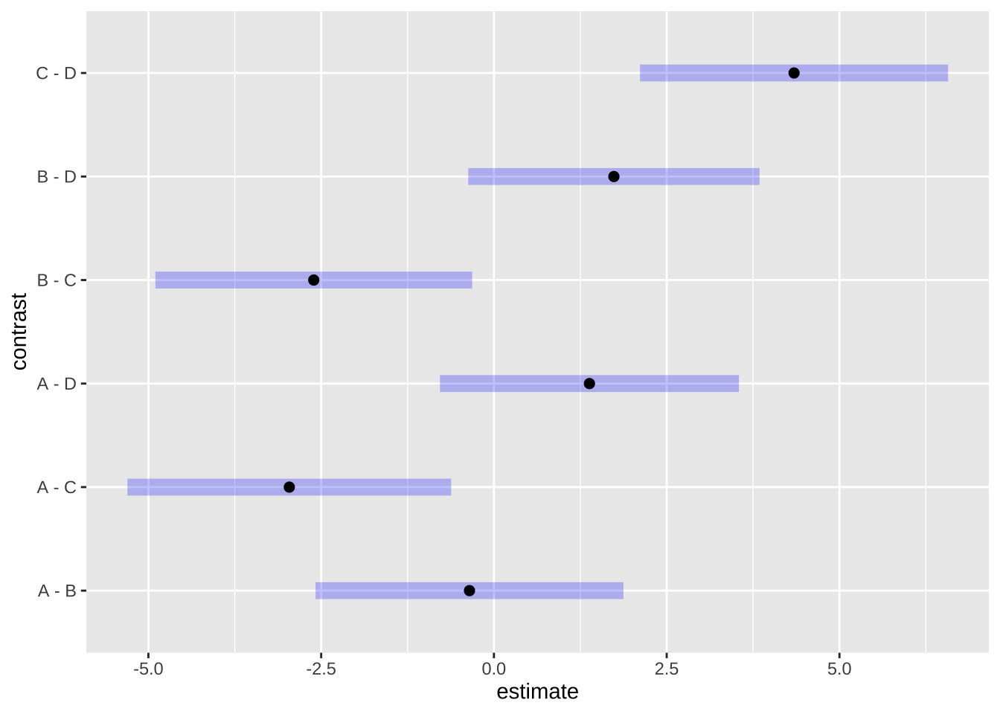
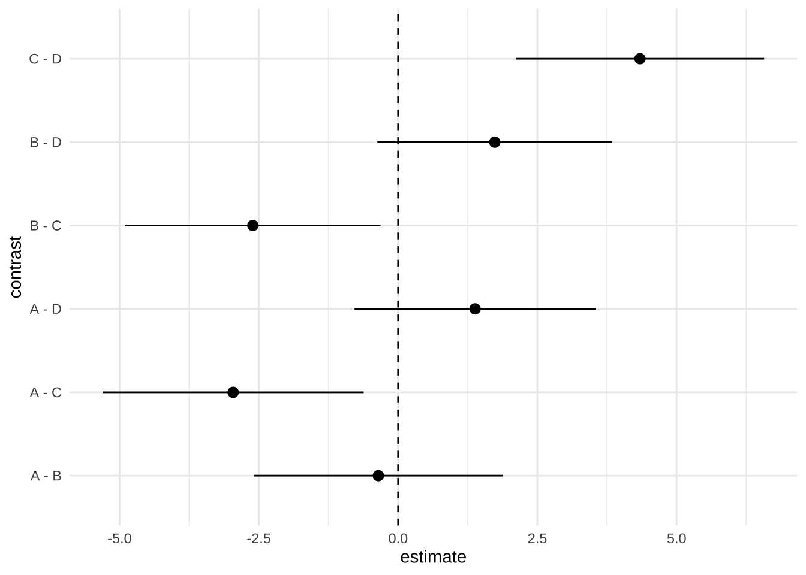

4 分散分析 (ANOVA)
授業では, 多群における平均値の差の検定の方法として, (1元配置) 分散分析 (ANOVA) を紹介した.
\(k\)個の群 (グループ) があり, それぞれの真の平均値が \(\mu_1,\mu_2,...,\mu_k\)であるとする.
ANOVA帰無仮説 (\(H_0\)): 全群の平均値が等しい (\(\mu_1=\mu_2=...=\mu_k\))
対立仮説 (\(H_1\)): 平均値の異なる群が少なくとも一つある (\(\mu_i \neq \mu_j, i \neq j\))
4.1 1元配置ANOVA
ANOVAの実行には, 1元配置ANOVAに特化したR関数であるoneway.anova()の他,
より一般のANOVAに適用できるaov(), anova()が利用できる.
以下では, 仮想データセット (3群, \(k=3\)) について,
aov()を使用した実行例を示す.
# コード出所: ChatGPT-4の出力をもとに編集
# 仮想データセットの作成 (数値例1)
# グループ数: k=3
k <- 3
ttt1 <- c(8, 7, 9, 6, 8)
ttt2 <- c(7, 5, 4)
ttt3 <- c(6, 2, 1, 3)
# "縦型形式"データセットの作成
dat1 <- data.frame(grp = c(rep("ttt1", length(ttt1)),
rep("ttt2", length(ttt2)),
rep("ttt3", length(ttt3))),
resp = c(ttt1, ttt2, ttt3))
# ANOVAの実行
res_aov <- aov(resp ~ grp, data = dat1)
# 実行結果の表示
summary(res_aov)
#> Df Sum Sq Mean Sq F value Pr(>F)
#> grp 2 47.13 23.567 8.887 0.0074 **
#> Residuals 9 23.87 2.652
#> ---
#> Signif. codes: 0 '***' 0.001 '**' 0.01 '*' 0.05 '.' 0.1 ' ' 1(自主課題)
- 実行結果の解釈をしてみよう.
ANOVAの計算ロジックの確認*
つぎに, 1元配置ANOVAが実際に行っている計算をRコードで書いたものを紹介する. これは, ANOVAの理論を理解を深めることを目的にしたもので, ANOVAの実践には不要であり, 読み飛ばしても構わない.
# 確認用 (飛ばしてOK)
library(tidyverse)
# 全体平方和 (SST) の計算
avg <- mean(dat1$resp) # 全体平均
# (mean(dat1$resp^2) - avg^2) * length(dat1$resp)
sst <- sum((dat1$resp - avg)^2) # 全体平方和
# 群内平方和 (SSW) の計算
# (※) 発展的なコード
# library(tidyverse)
ssw_j <- dat1 %>% group_by(grp) %>%
summarize(ssq = (mean(resp^2) - mean(resp)^2) * length(resp))
ssw <- sum(ssw_j$ssq) # 群内平方和
# 群間平方和 (SSB) の計算
n_vec <- c(length(ttt1), length(ttt2), length(ttt3))
avg_j <- dat1 %>% group_by(grp) %>% summarize(avg = mean(resp))
ssb <- sum((avg_j$avg - avg)^2 * n_vec) # 群間平方和
# または,
ssb <- sst - ssw # 群間平方和
# 自由度 (df)
# SST: length(dat1$resp) - 1,
# SSB: K - 1,
# SSW: length(dat1$resp) - K
# 平均平方和の計算
msb <- ssb / (k - 1)
msw <- ssw / (length(dat1$resp) - k)
# F値の計算
f_val <- msb / msw
# p値の計算
pf(f_val, k - 1, length(dat1$resp) - k, lower.tail = F)
#> [1] 0.007402874(自主課題)
- 関数
aov()の実行結果と見比べてみよう.
4.2 2元配置ANOVA
授業ではカバーしていないが, 2つの因子が反応変数に与える影響を 調べる2元配置ANOVAの実行コード例を紹介する.
ここでは, 別の仮想データセット (2群) を用意する.
# コード出所: ChatGPT-4の出力をもとに編集
# 仮想データセットの作成 (数値例2)
fctA_val <- c("a1", "a2", "a3", "a4")
fctB_val <- c("b1", "b2", "b3")
val <- matrix(c(8, 7, 6,
7, 5, 2,
6, 4, 3,
8, 6, 2), nrow = 4, byrow = T)
colnames(val) <- fctB_val
rownames(val) <- fctA_val
# "縦型形式"データセットに変形
dat2 <- as.data.frame(val) %>% rownames_to_column(var = "fctA") %>%
pivot_longer(cols = b1:b3, names_to = "fctB", values_to = "resp") %>% data.frame()
# SST
# sum((val - mean(val))^2)
# ANOVAの実行
res_aov <- aov(resp ~ fctA + fctB, data = dat2)
# 実行結果の表示
summary(res_aov)
#> Df Sum Sq Mean Sq F value Pr(>F)
#> fctA 3 12.67 4.222 4.343 0.05988 .
#> fctB 2 32.17 16.083 16.543 0.00362 **
#> Residuals 6 5.83 0.972
#> ---
#> Signif. codes: 0 '***' 0.001 '**' 0.01 '*' 0.05 '.' 0.1 ' ' 1
# interactionなし
# res_aov <- aov(resp ~ fctA * fctB, data = dat2)
# summary(res_aov)(自主課題)
- 実行結果の解釈をしてみよう.
4.3 分析例
データ1: 2業種口コミサイト(仮想データ)
t検定と結果の比較を行う.
データの読み込み, 並べ替え
x <- read.csv("dat_1-1.csv")
# 口コミサイト(仮想データ)
# 2つの業種(A, B), 各20社
# 各企業に対する(元)従業員による平均評価点(1--5)
head(x)
#> A B
#> 1 2.257 4.065
#> 2 4.273 4.771
#> 3 4.205 2.793
#> 4 3.251 3.003
#> 5 1.534 3.250
#> 6 3.327 3.390
# xの整形 (横型 → 縦型)
xvec <- as.vector(as.matrix(x)) # xをベクトル化
yvec <- c(rep("A", 20), rep("B", 20))
xdf <- data.frame(score = xvec, type = yvec)
str(xdf)
#> 'data.frame': 40 obs. of 2 variables:
#> $ score: num 2.26 4.27 4.21 3.25 1.53 ...
#> $ type : chr "A" "A" "A" "A" ...
xdf$score; xdf[, "score"]; xdf[, 1]
#> [1] 2.257 4.273 4.205 3.251 1.534 3.327 3.596 3.421 2.544 2.110 2.262 2.550
#> [13] 2.790 2.033 3.688 3.440 3.797 3.644 2.906 1.230 4.065 4.771 2.793 3.003
#> [25] 3.250 3.390 2.834 2.171 4.654 3.051 4.789 4.373 3.325 3.028 4.127 2.796
#> [37] 2.015 4.379 3.380 3.793
#> [1] 2.257 4.273 4.205 3.251 1.534 3.327 3.596 3.421 2.544 2.110 2.262 2.550
#> [13] 2.790 2.033 3.688 3.440 3.797 3.644 2.906 1.230 4.065 4.771 2.793 3.003
#> [25] 3.250 3.390 2.834 2.171 4.654 3.051 4.789 4.373 3.325 3.028 4.127 2.796
#> [37] 2.015 4.379 3.380 3.793
#> [1] 2.257 4.273 4.205 3.251 1.534 3.327 3.596 3.421 2.544 2.110 2.262 2.550
#> [13] 2.790 2.033 3.688 3.440 3.797 3.644 2.906 1.230 4.065 4.771 2.793 3.003
#> [25] 3.250 3.390 2.834 2.171 4.654 3.051 4.789 4.373 3.325 3.028 4.127 2.796
#> [37] 2.015 4.379 3.380 3.793
# 代替的方法
# stack(x)
## library(tidyverse)
## gather関数(横型→縦型), spread関数(縦型→横型)1元ANOVAの実行
# 1元ANOVA
attach(xdf)
res_aov <- aov(score ~ type)
summary(res_aov)
### 代替アプローチ (1)
oneway.test(score ~ type)
# デフォルト：等分散を仮定しない
oneway.test(score ~ type, var.equal = T)
# 等分散を仮定
### 代替アプローチ (2)
res_lm = lm(score ~ type)
res_anova <- anova(res_lm)
res_anova # summary()を使わずに出力
detach(xdf)
# 等分散検定
var.test(x$A, x$B)
boxplot(x)
# t検定との比較
t.test(x$A, x$B)
t.test(x$A, x$B, var.equal = T)
##t.test(x$A, x$B, paired=T)データ2: 統計小テストデータ
KBS専門科目「ビジネス統計」履修者に対して行った, 統計学に対する小テストの結果と, 各受験者のデモグラフィック情報から成るデータセットである.
これに対して, ANOVAを実行してみる.
year(学年), MF(性別:男性1女性2), AS(文理:文系1その他2理系3), math(数学履修年数), work(勤務年数), stat(統計学経験0-2), MS(経営科学好き嫌い0-3), s4(4級相当得点), s3(3級相当得点), s2(2級相当得点)testdat <- read.csv("BS_stattest.csv", header = F)
colnames(testdat) <- c("year", "MF", "AS",
"math", "work", "stat", "MS",
"s4", "s3", "s2")
# 総合得点の計算, 列に追加
score <- apply(testdat[, c("s4", "s3", "s2")], 1, sum)
testdat2 <- cbind(testdat, score)
# モダンな方法
# library(tidyverse)
# testdat2 <- testdat %>% mutate(score = s4 + s3 + s2)
str(testdat2)
#> 'data.frame': 37 obs. of 11 variables:
#> $ year : int 1 1 1 1 1 1 1 1 1 1 ...
#> $ MF : int 1 1 1 1 2 1 1 1 1 1 ...
#> $ AS : int 1 2 1 1 1 1 1 1 1 3 ...
#> $ math : int 13 6 8 7 5 5 5 6 8 10 ...
#> $ work : int 7 6 4 4 1 5 4 7 0 8 ...
#> $ stat : int 1 0 1 0 0 0 0 0 0 0 ...
#> $ MS : int 2 3 1 1 1 1 0 1 1 2 ...
#> $ s4 : int 7 8 7 7 7 5 5 7 8 7 ...
#> $ s3 : int 8 8 6 9 5 8 3 7 6 8 ...
#> $ s2 : int 7 8 6 7 4 7 2 6 7 5 ...
#> $ score: int 22 24 19 23 16 20 10 20 21 20 ...
# → 得点以外の変数も数値(整数)で入力されている
# 分割表(クロス集計表)
table(testdat2[, c("MF", "AS")])
#> AS
#> MF 1 2 3
#> 1 17 3 9
#> 2 4 1 3
# 相関係数
cor(testdat2[, c("math", "s2")])
#> math s2
#> math 1.00000000 0.04241976
#> s2 0.04241976 1.00000000
cor(testdat2[, c("MS", "s4", "s3", "s2")])
#> MS s4 s3 s2
#> MS 1.0000000 0.2592955 0.4922877 0.2600562
#> s4 0.2592955 1.0000000 0.1315443 0.1245631
#> s3 0.4922877 0.1315443 1.0000000 0.6435060
#> s2 0.2600562 0.1245631 0.6435060 1.0000000
cor(testdat2[, c("MS", "math")])
#> MS math
#> MS 1.0000000 0.2864297
#> math 0.2864297 1.0000000
# 箱ひげ図
attach(testdat2)
par(mfrow=c(1,2))
boxplot(score ~ factor(MF)) # 2-level factor
boxplot(score ~ factor(MS)) # 4-level factor
aaa <- table(testdat2[, c("MF", "AS")])
chisq.test(aaa)
#>
#> Pearson's Chi-squared test
#>
#> data: aaa
#> X-squared = 0.18986, df = 2, p-value = 0.9094
aaa <- table(testdat2[, c("MS", "AS")])
chisq.test(aaa)
#>
#> Pearson's Chi-squared test
#>
#> data: aaa
#> X-squared = 16.044, df = 6, p-value = 0.013521元ANOVA
# 1-way ANOVA
summary(aov(score ~ factor(MS)))
#> Df Sum Sq Mean Sq F value Pr(>F)
#> factor(MS) 3 108.2 36.07 3.282 0.0329 *
#> Residuals 33 362.8 10.99
#> ---
#> Signif. codes: 0 '***' 0.001 '**' 0.01 '*' 0.05 '.' 0.1 ' ' 1
# 代替的アプローチ
anova(lm(score ~ factor(MS)))
#> Analysis of Variance Table
#>
#> Response: score
#> Df Sum Sq Mean Sq F value Pr(>F)
#> factor(MS) 3 108.22 36.074 3.2817 0.03293 *
#> Residuals 33 362.75 10.992
#> ---
#> Signif. codes: 0 '***' 0.001 '**' 0.01 '*' 0.05 '.' 0.1 ' ' 12元ANOVA
2因子の場合には, 1因子の場合と異なり, 因子間に交互作用 (相互作用) が存在する場合がある.
関数interaction.plotにより交互作用プロットを作図することで,
存在の有無を目で確認することができる.
関数aov()を使用した実行例:

summary(aov(score ~ factor(MS) + factor(MF))) # 主効果項のみ (交互作用項なし)
#> Df Sum Sq Mean Sq F value Pr(>F)
#> factor(MS) 3 108.2 36.07 3.571 0.0246 *
#> factor(MF) 1 39.5 39.49 3.909 0.0567 .
#> Residuals 32 323.3 10.10
#> ---
#> Signif. codes: 0 '***' 0.001 '**' 0.01 '*' 0.05 '.' 0.1 ' ' 1
summary(aov(score ~ factor(MS) * factor(MF))) # 交互作用項有
#> Df Sum Sq Mean Sq F value Pr(>F)
#> factor(MS) 3 108.22 36.07 3.727 0.0217 *
#> factor(MF) 1 39.49 39.49 4.080 0.0524 .
#> factor(MS):factor(MF) 2 32.92 16.46 1.701 0.1997
#> Residuals 30 290.35 9.68
#> ---
#> Signif. codes: 0 '***' 0.001 '**' 0.01 '*' 0.05 '.' 0.1 ' ' 1代替的に, 関数anova()を使用した実行例:
# 代替的アプローチ
anova(lm(score ~ factor(MS) + factor(AS))) # 主効果項のみ (交互作用項なし)
#> Analysis of Variance Table
#>
#> Response: score
#> Df Sum Sq Mean Sq F value Pr(>F)
#> factor(MS) 3 108.22 36.074 3.3147 0.03267 *
#> factor(AS) 2 25.38 12.689 1.1659 0.32493
#> Residuals 31 337.37 10.883
#> ---
#> Signif. codes: 0 '***' 0.001 '**' 0.01 '*' 0.05 '.' 0.1 ' ' 1
anova(lm(score ~ factor(AS) + factor(MS))) # 分解順の影響
#> Analysis of Variance Table
#>
#> Response: score
#> Df Sum Sq Mean Sq F value Pr(>F)
#> factor(AS) 2 3.50 1.748 0.1607 0.85229
#> factor(MS) 3 130.10 43.368 3.9849 0.01642 *
#> Residuals 31 337.37 10.883
#> ---
#> Signif. codes: 0 '***' 0.001 '**' 0.01 '*' 0.05 '.' 0.1 ' ' 1
anova(lm(score ~ factor(MS) * factor(AS))) # 交互作用項有
#> Analysis of Variance Table
#>
#> Response: score
#> Df Sum Sq Mean Sq F value Pr(>F)
#> factor(MS) 3 108.22 36.074 3.3063 0.03397 *
#> factor(AS) 2 25.38 12.689 1.1629 0.32672
#> factor(MS):factor(AS) 2 20.96 10.478 0.9603 0.39460
#> Residuals 29 316.42 10.911
#> ---
#> Signif. codes: 0 '***' 0.001 '**' 0.01 '*' 0.05 '.' 0.1 ' ' 1
lm(score~factor(MS) + factor(MF))
#>
#> Call:
#> lm(formula = score ~ factor(MS) + factor(MF))
#>
#> Coefficients:
#> (Intercept) factor(MS)1 factor(MS)2 factor(MS)3 factor(MF)2
#> 15.552 2.693 3.820 8.448 -2.604
detach(testdat2)(自主課題)
実行結果の解釈をしてみよう.
“対応のある分散分析”を実行してみよう. (ヒント: 山田・杉澤・村井 (2008)『Rによるやさしい統計学』「第7章 分散分析」を参照せよ.)
データ3: 経営科学アンケート
KBS専門科目「ビジネス統計」履修者に対して行った, MBA基礎科目「経営科学」に対するフィードバックの回答と, 各受験者のデモグラフィック情報から成るデータセットである.
グループ(group), 負荷(workload), 難易度(difficulty), 有用性(usefulness), 貢献度(contribution), 数学スキル(Math), エクセルスキル(Excel), 文理(AS), 業務経験(Work), 性別(MF)testdat <- read.csv("FB_dist.csv", header=T)
attach(testdat)
# 実行1
aov(difficulty ~ Math)
#> Call:
#> aov(formula = difficulty ~ Math)
#>
#> Terms:
#> Math Residuals
#> Sum of Squares 20.02254 52.62250
#> Deg. of Freedom 1 113
#>
#> Residual standard error: 0.6824118
#> Estimated effects may be unbalanced
# anova(lm(difficulty ~ Math))
# 実行2
aov(difficulty ~ factor(Math))
#> Call:
#> aov(formula = difficulty ~ factor(Math))
#>
#> Terms:
#> factor(Math) Residuals
#> Sum of Squares 21.81657 50.82847
#> Deg. of Freedom 4 110
#>
#> Residual standard error: 0.6797624
#> Estimated effects may be unbalanced
# anova(lm(difficulty ~ factor(Math)))
detach(testdat)(自主課題)
実行結果の解釈をしてみよう.
“対応のある分散分析”を実行してみよう. (ヒント: 山田・杉澤・村井 (2008)『Rによるやさしい統計学』「第7章 分散分析」を参照せよ.)
4.4 分散分析と平均値の多重比較*
授業では, 多群における平均値の差の検定の方法として, (1元配置) 分散分析 (ANOVA) を紹介したが, その中で, 2群のt検定を繰り返し実行する方法についての質問があった.
(独立な) 検定を繰り返し実行すると実質的な有意水準が低下し, 帰無仮説を想定より棄却しやすくなる現象”多重検定問題”について 言及した.
また, 分散分析の結果について追加分析の必要性についても言及した. このように3群以上を比較したい場合に, 分散分析（ANOVA）を実施し, 全体差ありと判定された後に多重比較法 (ペア比較) を実施することをPost-hoc test (事後検定)と呼ぶ.
-多重比較法 (MCP):
- 複数の仮説 (平均値の差など) を同時に検定する際に, 全体の誤り率 (FWERやFDRなど) を制御するための統計的方法の総称ここでは, ANOVAによって, 群間に平均値の差ありと判断された後に実践される方法として, Tukeyによる HSD（Honestly Significant Difference）検定について紹介する.
これは 一元配置ANOVAの全ペアに対して, 平均の差について同時に検定・同時信頼区間を与える多重比較法である (有意水準の補正を内包).
FWER (family-wise error rate, ファミリー内誤差率）を α にコントロール する. (すなわち, 別途 Bonferroni 等の補正は不要)
HSD検定は, 群サイズが異なるにも適用可能であり, Tukey–Kramer法とも呼ばれる.
- FWER: ある多重検定の集合（family）に含まれる仮説群のうち, 少なくとも一つでも誤って棄却する確率: \(FWER=\)P(少なくとも1つの誤検出)
- 前提：独立性・正規性・等分散性.
- 等分散でない場合 (Games–Howell), 正規性の仮定なし (ノンパラメトリック) の場合 (Steel-Dwass)
以下の出所: ChatGPT (GPT-5) の出力を一部加工
Rによる事後分析の実行例
1) 基本：ANOVA → TukeyHSD
set.seed(1)
dat <- data.frame(
group = rep(LETTERS[1:4], times = c(20, 22, 18, 25)), # サイズ不等でも可
y = c(rnorm(20, 0, 3),
rnorm(22, 1, 3),
rnorm(18, 3, 3),
rnorm(25, -1, 3))
)
# 一元配置 ANOVA
fit <- aov(y ~ group, data = dat)
# Tukey（R base の同時比較：不等サイズなら内部で Tukey–Kramer）
tk <- TukeyHSD(fit) # 同時CIと同時p値（FWER制御）
print(tk)
#> Tukey multiple comparisons of means
#> 95% family-wise confidence level
#>
#> Fit: aov(formula = y ~ group, data = dat)
#>
#> $group
#> diff lwr upr p adj
#> B-A 0.3537944 -1.8739998 2.5815887 0.9754905
#> C-A 2.9607318 0.6180284 5.3034353 0.0073568
#> D-A -1.3820488 -3.5452555 0.7811580 0.3430124
#> C-B 2.6069374 0.3152300 4.8986448 0.0192974
#> D-B -1.7358432 -3.8437158 0.3720294 0.1432848
#> D-C -4.3427806 -6.5717533 -2.1138079 0.0000124
参考: ggplot2を用いた可視化の例
library(emmeans)
emm <- emmeans(fit, ~ group)
pairs <- pairs(emm, adjust = "tukey")
plot(pairs) # latticeベースの図
# ggplot2 に変換
df <- as.data.frame(confint(pairs))
library(ggplot2)
ggplot(df, aes(contrast, estimate, ymin = lower.CL, ymax = upper.CL)) +
geom_pointrange() +
geom_hline(yintercept = 0, linetype = 2) +
coord_flip() +
theme_minimal()
2) 推定周辺平均（EMM）経由の一般化（推奨）
# install.packages("emmeans")
library(emmeans)
emm <- emmeans(fit, ~ group)
res <- pairs(emm, adjust = "tukey") # 同時p値（FWER制御）
conf <- confint(pairs(emm), adjust = "tukey") # 同時CI
res
#> contrast estimate SE df t.ratio p.value
#> A - B -0.354 0.849 81 -0.417 0.9755
#> A - C -2.961 0.893 81 -3.315 0.0074
#> A - D 1.382 0.825 81 1.676 0.3430
#> B - C -2.607 0.874 81 -2.984 0.0193
#> B - D 1.736 0.804 81 2.160 0.1433
#> C - D 4.343 0.850 81 5.111 <.0001
#>
#> P value adjustment: tukey method for comparing a family of 4 estimates
conf
#> contrast estimate SE df lower.CL upper.CL
#> A - B -0.354 0.849 81 -2.582 1.874
#> A - C -2.961 0.893 81 -5.303 -0.618
#> A - D 1.382 0.825 81 -0.781 3.545
#> B - C -2.607 0.874 81 -4.899 -0.315
#> B - D 1.736 0.804 81 -0.372 3.844
#> C - D 4.343 0.850 81 2.114 6.572
#>
#> Confidence level used: 0.95
#> Conf-level adjustment: tukey method for comparing a family of 4 estimatesemmeans()は共変量調整付きモデル (例：線形モデル、GLM、混合効果) でも同様に, 調整済み平均差の Tukey を適用でき, 実務で汎用的である.
3) 単純な「ペアごとの t 検定」を多重比較補正つきで一括実行
Tukey ではなく,「普通のペア t 検定＋p 値補正」をしたい場合:
# 等分散仮定の t 検定を全ペアで実施し、p値を同時に補正
ptt <- pairwise.t.test(dat$y, dat$group, p.adjust.method = "holm", pool.sd = TRUE)
ptt
#>
#> Pairwise comparisons using t tests with pooled SD
#>
#> data: dat$y and dat$group
#>
#> A B C
#> B 0.6781 - -
#> C 0.0069 0.0150 -
#> D 0.1952 0.1011 1.3e-05
#>
#> P value adjustment method: holm- p.adjust.method には “bonferroni”, “holm”, “BH”（FDR）など.
- こちらは 「t検定＋補正」 であり, Tukey そのものではない. (分布と臨界値が異なる). FWER を厳密に制御したい ANOVA 後の全対比較には, 通常 Tukey を選ぶ.
4) 等分散が怪しいとき（参考：Games–Howell）
# install.packages("rstatix")
library(rstatix)
gh <- games_howell_test(dat, y ~ group) # Welch型 + 不等分散・不等サイズに強い
gh
#> # A tibble: 6 × 8
#> .y. group1 group2 estimate conf.low conf.high p.adj p.adj.signif
#> * <chr> <chr> <chr> <dbl> <dbl> <dbl> <dbl> <chr>
#> 1 y A B 0.354 -1.82 2.53 0.972 ns
#> 2 y A C 2.96 0.654 5.27 0.007 **
#> 3 y A D -1.38 -3.71 0.945 0.396 ns
#> 4 y B C 2.61 0.451 4.76 0.013 *
#> 5 y B D -1.74 -3.91 0.440 0.16 ns
#> 6 y C D -4.34 -6.65 -2.04 0.0000579 ****- 等分散仮定を置かない多重比較として実務で広く用いられる (FWER近似制御).